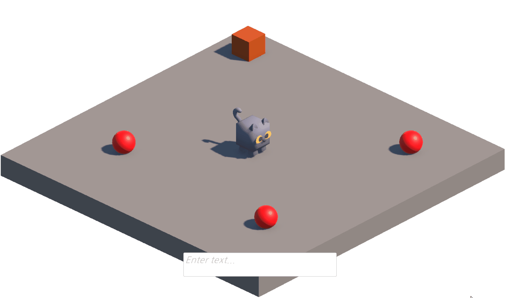

명령안에 세부 명령 의도가 내포 되어 있음
플레이어 입력은 “사과를 박스에 담아”처럼 이동, 획득, 배치 의도가 한 문장 안에 섞입니다. Unity는 자연어를 그대로 실행할 수 없기 때문에 명령을 실행 단위로 나누는 과정이 필요했습니다.
AI NPC Prototype
플레이어의 자연어 명령을 LLM 기반 백엔드가 해석하고, Unity NPC가 실제 게임 월드에서 이동, 아이템 획득, 내려놓기, 정지 액션으로 실행하는 자연어 기반 Unity NPC 제어 시스템입니다.
정해진 명령어를 외우지 않아도 NPC에게 자연어로 행동을 지시할 수 있는 프로토타입입니다. Unity 클라이언트와 FastAPI 백엔드를 WebSocket으로 연결하고, 백엔드는 입력 의도와 현재 Unity 상태를 바탕으로 NPC가 실행할 수 있는 구조화된 액션 시퀀스를 생성합니다.
플레이어 입력을 먼저 대화와 실행 명령으로 분류해 잡담과 행동 요청을 분리했습니다.
명령으로 판단되면 벡엔드의 Planner Agent가 Unity에 씬 오브젝트, NPC 상태, 인벤토리 정보를 조회할수 있는 Tool을 사용해 현재 씬의 정보를 확인하고, 구조화된 명령 리스트로 변환하는데 사용합니다
백엔드가 생성한 구조화된 명령리스트를 Unity NPC가 액션 큐에 등록하고 순서대로 실행합니다.
플레이어 입력은 “사과를 박스에 담아”처럼 이동, 획득, 배치 의도가 한 문장 안에 섞입니다. Unity는 자연어를 그대로 실행할 수 없기 때문에 명령을 실행 단위로 나누는 과정이 필요했습니다.
NPC가 런타임 중에 실행할수 있는 행동들을 최소 단위(`MOVE_TO`, `GET_ITEM`, `PUT_ITEM`, `STOP`)로 정의하고, 복합적인 의미가 있는 명령을 순서가 있는 최소단위의 명령 목록들로 바꿔야 했습니다.
Planner가 Unity 씬 오브젝트, NPC 상태, 인벤토리를 tool call로 조회하게 하고, 결과를 구조화된 JSON 스키마로 반환하도록 구성했습니다. Unity 측에서는 받은 액션을 큐에 넣어 순차 실행했습니다.
“사과를 박스에 담아” 같은 입력을 이동(사과), 획득(사과), 이동(박스), 내려놓기(박스) 흐름으로 변환해 NPC가 실제 게임 월드에서 순서대로 행동하도록 만들었습니다.
Player Input
사과를 박스에 담아